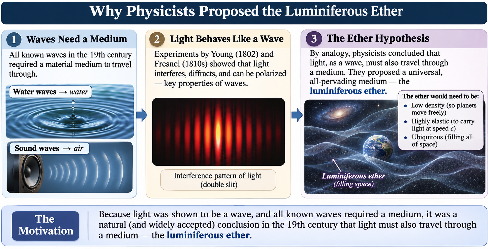
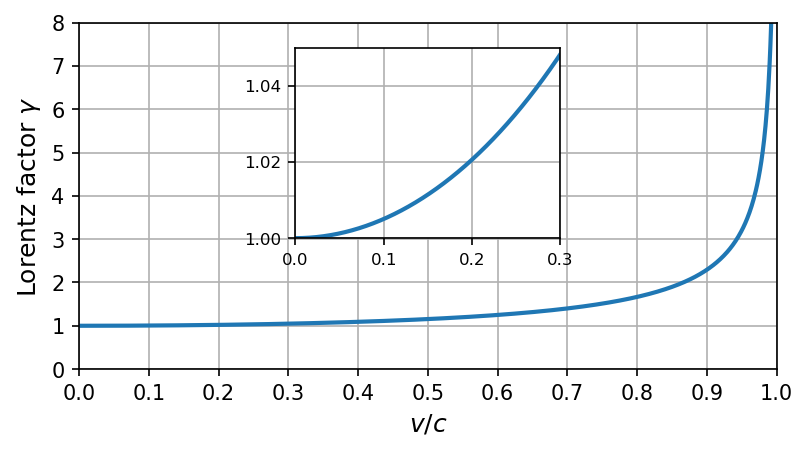
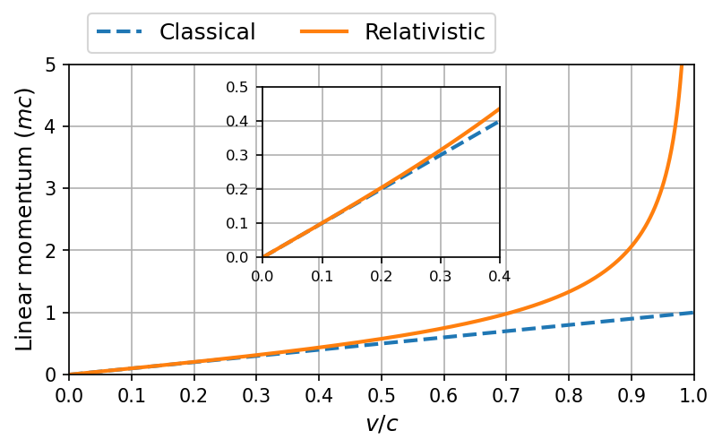
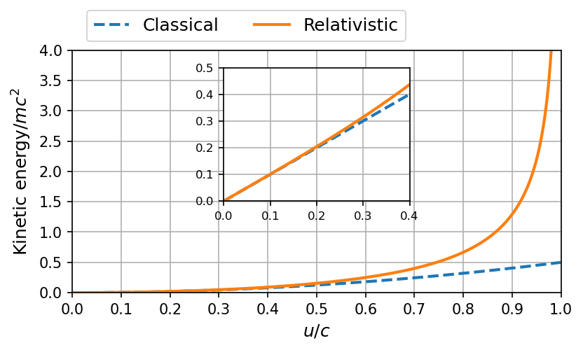
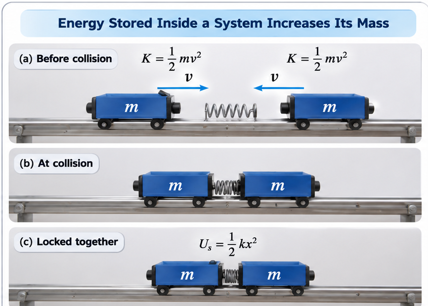
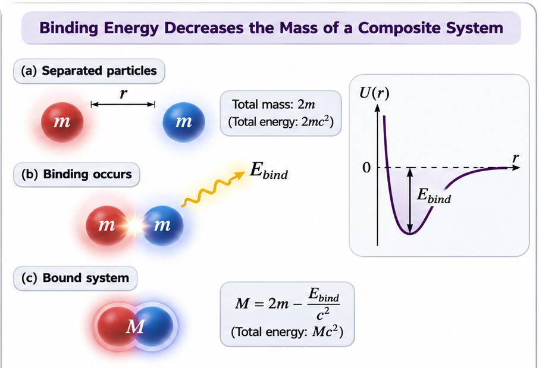

2. Special Theory of Relativity#
Nov 20, 2026 | 12056 words | 80 min read
Albert Einstein presented his special theory of relativity in 1905, which tells us how we should measure the relative motion of bodies at high speed. Most objects are moving slow enough and thus, the Newtonian principle of relativity (or Galilean invariance) is an acceptable approximation. Newton’s laws of motion must be measured relative to some reference frame, where an inertial frame is present if Newton’s laws are valid in that frame.
A body moves in a straight line with constant velocity if it is not subject to a net external force (i.e., Newton’s first law), where the coordinate system attached to that body defines an inertial frame. A reference frame moving at a uniform velocity relative to the first system also obeys Newton’s laws. Newton showed that it was not possible to determine absolute motion in space by any experiment, where he used relative motion.
Consider two inertial reference frames that are moving relative to each other along their \(x\) and \(x^\prime\) axes with a uniform velocity \(v\), as shown in Figure 2.1.
Fig. 2.1 Galilean transformation between moving reference frames. The frame \(K'\) moves at constant velocity \(v\) along the \(x\)-axis of frame \(K\). The point \(P\) remains fixed in \(K\), while its coordinate \(x'\) decreases as the origin \(O'\) moves to the right. After time \(t\), the origins are separated by \(vt\), so \(x=vt+x'\) and therefore \(x'=x-vt\). The transverse coordinates and time remain unchanged: \(y'=y\), \(z'=z\), and \(t'=t\). Animation created with Manim Community.#
The motion of the primed coordinates can be written in terms of the unprimed coordinates as
Newton considered the concepts of time and space as completely separable, where space is relative and time is absolute (i.e., \(t=t^\prime\)). Equation (2.1) is known as the Galilean transformation, where the inverse transformation can be determined algebraically (e.g., \(x = x^\prime + vt\)). Newton’s laws of motion are invariant (i.e., have the same form) under a Galilean transformation.
2.1. Need for Ether#
Thomas Young performed his famous experiments on the interference of light in 1802. Augustin Fresnel showed a detailed understanding of interference, diffraction, and polarization a decade later. These discoveries showed that light could behave like a wave and how waves interact with each other. But, classical physicists “knew” that all waves needed a medium to travel, where they proposed the luminiferous aether (i.e., ether) as that medium. The ether had to have a low density that planets could pass through it with no apparent changes in their orbits. Its elasticity must be strong enough to support incredibly high wave speeds too.
Maxwell showed that the speed of light in different media depends only on the electric and magnetic properties of matter. In vacuum, the speed of light depends on the permeability \(\mu_o\) and permittivity \(\epsilon_o\) of free space. The properties of the ether must be consistent with electromagnetic theory, which required only a sensitive enough experiment. There was a general consensus for the concept of ether by 1880. Maxwell’s equations were elegant enough to make testable predictions, including matters concerning the ether.

Fig. 2.2 Historical motivation for the luminiferous ether. Because familiar waves required a material medium, nineteenth-century physicists proposed that light propagated through an invisible medium filling space.#
Suppose we flash a light in a moving system \(K^\prime\) and an observer in system \(K^\prime\) measures the speed of light as \(c\). We can find the speed measured in system \(K\) through the addition of velocities, \(c \pm v\), where \(v\) is the relative speed of the two systems. Maxwell’s equations don’t differentiate between the two systems, and it was unclear which frame should be taken as the reference. In the late 19th century, physicists proposed that the preferred inertial reference frame was the one with the ether and the speed of light in that frame was \(c\). No experiment at the time was able to discern the effect due to the relative speed \(v\) (i.e., \(c\pm v \approx c\)).
2.2. Michelson-Morley Experiment#
2.2.1. Michelson’s Interferometer#
The Earth orbits the Sun at \(\sim 30\ {\rm km/s}\) (or \(\sim 10^{-4}c\)), so an obvious experiment is to try to find the effects of the Earth’s motion through the ether. Albert Michelson built an extremely precise device called an interferometer, which measures the phase difference between two light waves. Michelson used his interferometer to detect the difference in the speed of light passing through the ether in different directions. Figure 2.3 shows the basic setup for the Michelson interferometer.
Fig. 2.3 Michelson interferometer. (a) Apparatus and (b) plan view. The beam splitter \(M\) directs light toward mirrors \(M_1\) and \(M_2\); the returning beams recombine toward the screen. \(S\) is the source diffuser, and \(C\) compensates for the unequal glass thickness traversed by the two paths. Colors distinguish paths, not wavelengths; output rays are separated slightly for visibility. Realistic illustration and animation based on OpenStax University Physics, Volume 3, Figure 3.16. Animation created with Manim Community.#
Initially, it is assumed that one of the interferometer arms (\(d_1\) or \(d_2\)) is parallel to Earth’s motion through the ether. Light leaves the source and passes through the glass plate \(M\). Part of the light will eventually go to the mirror \(M_1\) and part of the light will travel to \(M_2\). The back of \(M\) is partially silvered and part of the light is reflected. The light is reflected at the mirrors (\(M_1\) and \(M_2\)) and comes back to the partially silvered mirror \(M\), where part of the light from each path passes on to the observer/detector. The compensator is added at \(C\) to make sure both light paths pass through equal thicknesses of glass. Figure 2.3 shows the paths the light can take.
Using sodium as a bright light source (don’t use a laser if you’re the observer), interference fringes can be found. The fringe pattern should shift if the apparatus is rotated through \(90^\circ\), such that the path \(d_1\) becomes parallel to Earth’s motion and the path \(d_2\) is perpendicular. The observed interference pattern consists of light and dark bands that correspond to constructive and destructive interference (Figure 2.3).
For constructive interference, the difference between the two path lengths is given by an integer \(n\) number of wavelengths \(\lambda\), \(2(d_1-d_2) = n\lambda\). The expected shift in the interference pattern can be calculated by the time difference between the two paths. When light travels to the right along path \(d_2\), the velocity of light according to the Galilean transformation is \(c+v\) because the ether carries the light along with it. On the return journey, the velocity is \(c-v\) because the light is now traveling against the path of the ether. The total time for the round trip is
For the other path, the light is moving across the current of the ether. It must move upriver to compensate for when the current carries the light downstream. This makes a triangle, where the ether’s velocity is \(c\) and the light has a velocity \(v\) that is diagonal to \(c\). The velocity that accounts for the current of the ether is \(\sqrt{c^2 -v^2}\) instead of \(c^2-v^2\). From the equation for \(t_2\), we can deduce that the round trip time is
The time difference between the two journeys \(\Delta t\) is
If we rotate the apparatus by \(90^\circ\) so that the ether passes along \(d_1\), the time difference \(\Delta t^\prime\) is
Michelson looked for a shift in the interference pattern and found the time difference as
Since \(v \ll c\), we can use the binomial expansion to expand the terms involving \(v^2/c^2\) as \(x\), where higher order terms in \(x\) are negligible. The time difference becomes
To measure the time difference in Eqn. (2.4) Michelson used 30 km/s for the Earth’s orbital speed and his apparatus had \(1.2\ {\rm m}\) arms (\(d_1=d_2\)). The predicted time difference is only \(8 \times 10^{-17}\ {\rm s}\). For a visible wavelength (\(600\ {\rm nm}\)), the period of one wavelength amounts to \(T = 1/f = \lambda/c = 2 \times 10^{-15}\ {\rm s}\). The predicted time difference represents 0.04 fringes in the interference pattern. Michelson reasoned that a shift of at least 0.02 fringes was detectable, but found no shift. Michelson concluded that the hypothesis of the stationary ether must be incorrect.
2.2.2. Collaboration with Morley#
Michelson’s experimental result was so surprising that he was asked by several well-known physicists to repeat it. Together with Edward Morley, Michelson put together a more sophisticated experiment with more mirrors, some of which were adjustable. The new experiment had an optical path length of \(11\ {\rm m}\) from eight round trips. It was mounted on soapstone that floated on mercury to eliminate vibrations. Michelson and Morley believed they could detect a fringe shift as small as 0.005 and expected the ether to produce a shift of 0.4. In 1887, they reported a null result (i.e., no effect). The ether does not seem to exist.
The inability to detect the ether was a serious blow to reconciling the invariant form of Maxwell’s equations. Lorentz and FitzGerald suggested (apparently independently) that the Michelson-Morley experiment could be understood if length is contracted by the factor \(\gamma^{-1} = \sqrt{1 - v^2/c^2}\) in the direction of motion, where \(v\) is the speed. In this situation, the length \(d_2\) will be contracted by the \(\gamma^{-1}\) factor, whereas the length \(d_1\) will not. Applying the factor to Eqn. (2.2) results in making \(\Delta t = 0\) as determined experimentally by Michelson. The contraction postulate became known as the Lorentz-FitzGerald contraction and was not proven from first principles using Maxwell’s equations. Einstein presented his explanation later, and the true significance of the postulate was understood.
2.3. Einstein’s Postulates#
The Michelson-Morley experiment exposed the idea of a preferred inertial system of Maxwell’s equations as false. However, a problem remained where the Galilean transformation was invalid for Maxwell’s equations, but worked for the laws of mechanics. Einstein looked at the problem in a more formal manner and believed that Maxwell’s equations must be valid in all inertial frames. As a result, he developed two postulates, which are
The principle of relativity: The laws of physics are the same in all inertial systems. There is no way to detect absolute motion and no preferred inertial system exists.
The constancy of the speed of light: Observers in all inertial systems measure the same value for the speed of light in a vacuum.
The first postulate indicates that the laws of physics are the same in all coordinate systems moving with uniform relative motion to each other. Einstein showed that postulate 2 actually follows from postulate 1. Einstein used these postulates to re-evaluate Newton’s principle of relativity and expanded it to include all laws of physics, including those of electromagnetism.
Note
We can now modify our previous definition of inertial frames of reference to be those frames of reference in which all the laws of physics are valid.
To make things clearer, Einstein used thought experiments to work out how relativity would work in real life. Recall the problem at the end of Sect. 2.1, we had assumed that events occurring in system \(K\) and \(K^\prime\) could be easily synchronized so that \(t = t^\prime\). Einstein realized that each system must have its own observers with their own clocks and metersticks.
Consider two observers measuring the time interval between two flashes of light from flash lamps that are a distance apart (Figs. 2.4-2.6).
Fig. 2.4 Simultaneous emission. Two flashes of light are emitted simultaneously from opposite ends of a moving train, as measured in the ground reference frame. Animation created using Manim.#
An observer A is seated midway on a rail car with two flash lamps at opposite sides equidistant from her. A pulse of light is emitted from each flash lamp and moves toward observer A, (Fig. 2.4). The rail car is moving rapidly to the right. An observer B standing on the platform is facing the rail car as it passes and observes both flashes of light reach him simultaneously, (Fig. 2.5). He measures the distances from where he saw the pulses originate, finds them equal, and concludes that the pulses were emitted simultaneously.
Because of observer A’s motion, the pulse from the right of the railcar reaches her before the pulse from the left (Fig. 2.5). She also measures the distances from within her frame of reference, finds them equal, and concludes that the pulses were not emitted simultaneously. We conclude that
Two events that are simultaneous in one reference frame are not necessarily simultaneous in another reference frame moving with respect to the first frame.
Time comparison can be accomplished by sending light signals from one observer to another, but the information travels with a finite speed (i.e., the speed of light). It is best if each system has its own observer with synchronized clocks. We can determine the time of an event occurring far away from us by having a colleague at the event, with a clock fixed at rest, measure the time of a particular event, and send us the results.
A more rigorous transformation called the Lorentz transformation makes the laws of physics invariant between inertial frames of reference. At \(t=t^\prime=0\), the origins of two coordinate systems are coincident and the system \(K^\prime\) is traveling along the \(x\) and \(x^\prime\) axes. For this special case the Lorentz transformation equations are
We commonly use the following substitutions,
to write Eqn. (2.5) in a more compact form.
2.4. Lorentz Transformations#
Ultimately, we want to know which transformation is necessary so that all inertial frames of reference are valid for the laws of physics (i.e., both Newton’s mechanics and Maxwell’s equations).
Consider two inertial reference frames (\(K\) and \(K^\prime\)) that are moving relative to each other along their \(x\) and \(x^\prime\) axes with a uniform velocity \(v\), as shown in Figure 2.1. A flash lamp goes off at \(t=t^\prime=0\), where the speed of light will be \(c\) in both systems according to postulate 2. The wavefronts observed in both systems must be spherical and described by
These equations are inconsistent with a Galilean transformation because a wavefront can be spherical in only one system when the second is moving at a relative speed \(v\). The Lorentz transformation requires both systems to have a spherical wavefront centered on each system’s origin.
Another clear break with Newtonian physics is that each system must have its own clock and meter sticks. Since the systems move only along their \(x\) axes, observers in both systems agree by direct observation that \(y^\prime = y\) and \(z^\prime = z\). The Galilean transformation \(x^\prime = x - vt\) is incorrect, where we need a linear transformation that maps each event in system \(K\) to a unique (i.e., only one) event in \(K^\prime\). The simplest linear transformations are
The transformation is linear because \(\gamma\) does not depend on \(x\) or \(t\) and must be close to 1 to reduce back to Newtonian physics. From postulate 1, we demand that \(\gamma =\gamma^\prime\).
According to postulate 2, the speed of light is \(c\) in both systems. Therefore the wavefront of the light pulse in each system is described by \(x=ct\) and \(x^\prime = ct^\prime\). Direct substitution produces the following
From these equations, we want to determine \(\gamma\) and solve for \(t^\prime\) in terms of un-primed coordinates.
To solve for \(\gamma\), we transform the above equations into
and through direct substitution, we get
Eliminating \(t^\prime\) and solving for \(\gamma\) produces
Now we can solve for \(t^\prime\) in un-primed coordinates directly by
and using the substitution \(t = x/c\) in the \(vt/c\) term to get
Now we have the complete Lorentz transformations or Eqn. (2.5). The inverse transformation equations are obtained by replacing \(v\) by \(-v\) and by exchanging the primed and unprimed quantities (i.e., \(x\rightarrow x^\prime\)).
As you watch, focus on how the Lorentz transformations relate measurements of space and time between moving reference frames. Pay attention to how these transformations differ from the Galilean transformations and why the speed of light must remain constant in both frames.
Notice that the Lorentz transformation is approximately the Galilean transformation for \(v\ll c\) and becomes significantly more different as \(v / c \rightarrow 1\). Figure Fig. 2.7 illustrates how the relativistic factor \(\gamma\) changes with \(v/c\). Expand the dropdown below to view the Python code used to generate the figure.

Fig. 2.7 Lorentz factor as a function of relative speed. The Lorentz factor \(\gamma\) remains close to unity at low speeds but increases rapidly as \(v\) approaches the speed of light, \(c\). The inset highlights the small deviations from unity at low speeds (\(v/c \leq 0.3\)).#
Show code cell content
import numpy as np
import matplotlib.pyplot as plt
from mpl_toolkits.axes_grid1.inset_locator import inset_axes, mark_inset
from myst_nb import glue
beta = np.arange(0, 1, 0.001)
gamma = 1. / np.sqrt(1 - beta**2)
fs = 'large'
fig, ax = plt.subplots(figsize=(6, 3), dpi=150)
# Main plot
ax.plot(beta, gamma, '-', lw=2)
ax.set_xlabel(r"$v/c$", fontsize=fs)
ax.set_ylabel(r"Relativistic factor $\gamma$", fontsize=fs)
ax.grid(True)
ax.set_xlim(0, 1)
ax.set_ylim(0, 8)
ax.set_xticks(np.arange(0, 1.1, 0.1))
ax.set_ylabel(r"Lorentz factor $\gamma$", fontsize=fs)
# Inset plot
axins = inset_axes(ax, width="38%", height="55%", loc="upper center", borderpad=1.2)
axins.plot(beta, gamma, '-', lw=2)
axins.grid(True)
# Zoom region
axins.set_xlim(0, 0.3)
axins.set_ylim(1.0, 1.05)
axins.set_xticks([0.0, 0.1, 0.2, 0.3])
axins.set_yticks([1.00, 1.02, 1.04])
axins.tick_params(labelsize=8)
glue("lorentz-factor-figure", fig, display=False)
#plt.close(fig)
The implications of the Lorentz transformation are that
a single event in one system is described uniquely by an event in another inertial system.
space and time are not separate. To express the position of \(x\) in system \(K^\prime\), we must use both \(x^\prime\) and \(t^\prime\).
the relativistic factor does not allow for \(v>c\) (i.e., otherwise it would become imaginary).
2.5. Time Dilation and Length Contraction#
The Lorentz transformations affect both the time and apparent length for observers in different inertial frames.
Consider two reference frames, where \(K\) is fixed (at rest) and \(K^\prime\) is moving along the \(x\) axis with a velocity \(\vec{v}\). A lamp is lit in the fixed frame \(K\), when the clock in \(K\) reads a time \(t_1\). The lamp is extinguished when the clock in \(K\) reads a time \(t_2\). Therefore, the total time for which the lamp is lit is \(T_o = t_2 - t_1\), or the proper time. The proper time is the time difference between two events occurring at the same position in a system as measured by a clock at rest in the system.
The time determined by an observer in the moving frame \(K\) will be different. Assuming all the clocks have been synchronized, the time measured by the observer in \(K^\prime\) is \(t_2^\prime - t_1^\prime\), or
In the fixed frame \(K\), the clock is fixed (in space) at \(x_1\) and so \(x_2-x_1 = 0\). Then, the observed time in the moving frame \(K^\prime\) is
which means that the observer in the moving frame measures a longer duration for the lamp than the observer in the fixed frame. This effect is known as time dilation and is a direct result of Einstein’s two postulates. The time dilation result is often interpreted by saying that moving clocks run slow by the factor \(\gamma^{-1}\).
2.5.1. Example Problem: Provision limit for a Proxima Centauri mission#
Example Problem: Provision limit for a Proxima Centauri mission
It is the year 2150 and the UN Space Federation has finally perfected the storage of antiprotons for use as a fuel in a spaceship. Preparations are underway for a manned spacecraft to visit a planet orbiting Proxima Centauri, which is 4.25 lightyears away. Due to strict regulations, only 16 years of provisions are available for the crew. How fast must the spacecraft travel if the provisions are to last? Neglect the time required to accelerate the spaceship, turnaround and visit the planets at Proxima Centauri, and to decelerate the spaceship upon return. They are negligible compared with the actual travel time.
Show worked solution
Introduction
The provisions limit the time experienced by the crew, rather than the time recorded on Earth. Because the mission covers an interstellar round trip, we need to connect the travel distance in Earth’s frame with the proper time aboard the spacecraft; treating the two times as identical would impose the wrong speed requirement. The crew cannot count on finding a Buc-ee’s along the way to restock.
Methodology
Let \(L\) be the one-way distance measured in the Earth frame \(K\), and let \(T_o^\prime\) be the total elapsed time on the spacecraft clock. We use the stated approximation that acceleration, turnaround, and the visit contribute negligible time, so the two coasting legs have the same speed magnitude \(v\). On each leg, time dilation relates the Earth-frame duration to the crew’s proper time, and the two contributions can be added:
Writing \(\beta=v/c\) makes the unknown dimensionless and allows us to use lightyears and years consistently. Squaring the relation and collecting the terms containing \(\beta\) gives
Using the entire provision allowance gives the minimum constant coasting speed; a faster trip would use less crew time.
Results and Discussion
With \(L=4.25\ {\rm ly}\), \(T_o^\prime=16\ {\rm yr}\), and \(c=1\ {\rm ly/yr}\), the speed ratio is
Thus, the required speed is approximately \(0.469c\), or \(1.41\times10^8\ {\rm m/s}\). Retaining guard digits in the calculation gives an Earth-frame duration \(T=2L/v\approx18.1\ {\rm yr}\), while the crew experiences \(16\ {\rm yr}\). The difference of about \(2.1\ {\rm yr}\) is a difference between clock readings for the same departure and reunion, not an additional allowance of provisions.
Conclusion
Combining Earth-frame travel time with time dilation shows that the provision limit can be met at a subluminal speed of about \(0.47c\). The result is consistent with the low-speed limit: if \(2L\ll cT_o^\prime\), the derived expression reduces to \(v\approx2L/T_o^\prime\), as classical travel-time reasoning requires. Here the Earth clock records more elapsed time than the crew clock, consistent with the spacecraft’s smaller proper time along the two coasting legs.
from scipy.constants import c, light_year
import numpy as np
yr_in_sec = 3600*24*365.25 #1 Earth-year in sec
ly = c*yr_in_sec #lightyear is the distance light travels in one year
print("The lightyear can be derived as %1.2e m or imported from a library as %1.2e m.\n" % (ly,light_year))
L = 4.25*light_year #distance to Proxima Centauri converted into meters
To_prime = 16*yr_in_sec #Mission duration of 16 years converted into seconds
v_req = np.sqrt((4*L**2*c**2)/(To_prime**2*c**2+4*L**2))
print("The required speed is %1.2e m/s or %1.3f c." % (v_req,v_req/c))
The lightyear can be derived as 9.46e+15 m or imported from a library as 9.46e+15 m.
The required speed is 1.41e+08 m/s or 0.469 c.
Now let’s consider what happens to the length of objects in relativity. Consider an observer in each system \(K\) and \(K^\prime\), where each observer has a meter stick at rest. Each meter stick measures a length \(L_o = x_r - x_l\) or \(L_o^\prime = x_r^\prime - x_l^\prime\) in the respective \(K\) or \(K^\prime\) frame, where the subscripts \(r\) and \(l\) refer to the left and right sides of the meter stick, respectively. The length measured at rest in either frame is called the proper length.
Let \(K^\prime\) denote a frame that is moving along the \(x\) axis with a speed \(v\). An observer in the \(K\) frame has to measure the position of both ends of the stick, simultaneously (i.e., \(t=t_r=t_l\)). Using the Lorentz transformation for \(x^\prime\) given in Eqn. (2.5), we can determine the length measured in the \(K^\prime\) frame as
Similar to the Eqn. (2.15), we insist that \(t_r-t_l=0\), and substitute the length \(L= x_r-x_l\), which is the length of the meter stick that is moving in the \(K^\prime\) frame measured by the observer in the \(K\) frame, to get
At rest, \(L_o^\prime = L_o\) and
For \(v \ll c\), \(L\approx L_o\) and the above expression reduces to the result from Newtonian relativity. At high speed \(v\lesssim c\) and \(L<L_o\), and the meter stick appears to shrink for the observer in the \(K\) frame. This effect is known as length or space contraction. It is also sometimes called the Lorentz-FitzGerald contraction because it was suggested prior to special relativity as a means to solve the electrodynamics problem. Similar to time dilation, we can find the inverse transformation by switching the primed and unprimed quantities and changing \(v\) to \(-v\). Observers in both systems will say that the other moving stick is shorter.
As you watch, focus on how measurements of distance and elapsed time depend on the observer’s reference frame. Pay particular attention to why measuring the length of a moving object requires determining the positions of both ends simultaneously in the observer’s frame.
2.5.2. Example Problem: Distance measured aboard the spacecraft#
Example Problem: Distance measured aboard the spacecraft
Consider a measurement of the distance between Earth and Proxima Centauri. How will the crew measure the distance that they travel to get to Proxima Centauri?
Show worked solution
Introduction
The crew must explain the same trip using distances and times measured in the spacecraft frame. Since Earth and Proxima Centauri move relative to that frame, the Earth-frame separation is not the distance the crew measures at one instant. Length contraction provides a second description of the mission established in the preceding example.
Methodology
Use the preceding mission’s speed \(v\) and the Earth-frame proper separation \(L_o=4.25\ {\rm ly}\). During a coasting leg, the crew measures the endpoints simultaneously in its own inertial frame, giving \(L=L_o/\gamma\). The allotted one-way crew time is \(t=T_o^\prime/2=8\ {\rm yr}\), so the same distance must also satisfy \(L=vt\) as the destination approaches the spacecraft. Equating these expressions gives
This recovers the mission speed without assuming that the Earth-frame and crew-frame travel times are equal.
Results and Discussion
The expression gives \(v\approx0.469c\), agreeing with the time-dilation calculation. Using the unrounded speed and Lorentz factor, the crew’s one-way distance is
Therefore, the crew measures approximately \(3.75\ {\rm ly}\), compared with Earth’s \(4.25\ {\rm ly}\). The same value follows from \(L_o/\gamma\), where \(\gamma\approx1.13\). The contraction changes the simultaneous separation assigned to the endpoints; it does not mean that the star has moved closer to Earth in Earth’s frame.
Conclusion
Length contraction and time dilation give consistent accounts of the same journey: the crew measures a shorter distance over its shorter elapsed time. The inequalities \(L<L_o\) and \(0<v<c\) provide immediate checks on the result, and \(L\rightarrow L_o\) as \(v\rightarrow0\) recovers the classical limit. Agreement between \(vt\) and \(L_o/\gamma\) checks the consistency of the two frame descriptions.
from scipy.constants import c, light_year
import numpy as np
yr_in_sec = 3600*24*365.25 #1 Earth-year in sec
L_o = 4.25*light_year #distance to Proxima Centauri converted into meters
t = 8*yr_in_sec #time to reach Proxima Centauri of 8 years converted into seconds
v_req = np.sqrt((L_o**2*c**2)/(t**2*c**2+L_o**2))
print("The required speed is %1.2e m/s or %1.3f c.\n" % (v_req,v_req/c))
print("The distance to Proxima Centauri according to the crew is %1.2f ly." % (v_req*t/light_year))
The required speed is 1.41e+08 m/s or 0.469 c.
The distance to Proxima Centauri according to the crew is 3.75 ly.
2.6. Addition of Velocities#
A spaceship in the far future will use light to navigate outer space and identify potential hazards to avoid (i.e., asteroids instead of icebergs). From Einstein’s postulate 2, the light propagates at a speed \(c\) in vacuum, but what happens if the spaceship is moving with a relative speed \(v^\prime\)? From Newtonian physics, we would apply the Galilean transformation and simply add the velocities, \(v = v^\prime + c\), where \(v\) is the speed measured by an observer in the rest frame. This is a problem because \(v > c\)!
Note
We reserve the letter \(v\) to express the velocity of the coordinate systems with respect to each other. The letter \(u\) is used to denote the velocity of objects as measured in various coordinate systems.
To measure the speed correctly, we start with the inverse Lorentz transformations in Eqn. (2.5). From calculus, the \(x\)-velocity \(u_x\) is the differential change in the position \(x\) with respect to a differential change in time \(t\) (i.e., \(u_x = dx/dt\)). Taking the differentials of Eqn. (2.5) (in the compact form) produces
To define the velocities (\(u_x^\prime,\ u_y^\prime,\ \text{and}\ u_z^\prime\)), we simply divide each Cartesian differential by \(dt^\prime\) to get
Equations (2.18) are known as the Lorentz velocity transformations. Notice that although the relative motion of the systems \(K\) and \(K^\prime\) is along the \(x\) direction that the velocities in the \(y\) and \(z\) directions are affected as well. The inverse transformations for \(u_x^\prime\), \(u_y^\prime\), and \(u_z^\prime\) can be determined by switching the primed and unprimed variables and changing \(v\) to \(-v\).
As you watch, focus on why velocities cannot simply be added using the classical rule when objects move at speeds approaching the speed of light. Pay attention to how the relativistic velocity-addition equation ensures that no observer measures a light signal traveling faster or slower than \(c\) in vacuum.
2.6.1. Example Problem: Protons fired sideways from a spacecraft#
Example Problem: Protons fired sideways from a spacecraft
A commander of a spaceship is holding target practice for junior officers by shooting protons of speed \(u_y^\prime = 0.99c\) off to the side at small asteroids as the spaceship passes them at a speed \(v = 0.6c\). What speed \(u\) will an observer at rest measure for the protons?
Show worked solution
Introduction
A sideways launch in the spacecraft frame need not remain sideways for an observer who sees the spacecraft moving. Combining a transverse velocity near \(c\) with the spacecraft’s forward motion requires the full velocity transformation, because ordinary vector addition would predict a superluminal speed.
Methodology
Let \(K\) be the observer’s rest frame and \(K^\prime\) the spacecraft frame moving at \(v=0.6c\) along \(+x\). In \(K^\prime\), the launch has components \(u_x^\prime=u_z^\prime=0\) and \(u_y^\prime=0.99c\). With these components, the common denominator \(1+vu_x^\prime/c^2\) in Eqn. (2.18) equals unity, so the transformed components reduce to
The transverse reduction is necessary because the observers assign different time intervals to the proton’s motion even though their transverse coordinates agree.
Results and Discussion
For the nominal speeds in the problem, \(\gamma=1/\sqrt{1-0.6^2}=1.25\), giving \(u_x=0.6c\) and \(u_y=0.792c\). The observer therefore measures
The proton speed is approximately \(0.994c\), still below \(c\). Three decimal places are retained here to make the small subluminal difference visible for these stipulated teaching values. By contrast, adding the untransformed components would give \(c\sqrt{0.6^2+0.99^2}\approx1.16c\), demonstrating why the transverse transformation matters.
Conclusion
Transforming the components before taking their magnitude produces a subluminal proton speed despite both large component speeds in the original descriptions. A stronger check follows by rearranging the symbolic result: \(1-u^2/c^2=(1-v^2/c^2)(1-u_y^{\prime 2}/c^2)>0\) whenever both input speeds are below \(c\). The expression also returns \(u=u_y^\prime\) when the spacecraft speed vanishes.
2.7. Experimental Verification#
2.7.1. Muon Decay#
High-energy particles called cosmic rays enter Earth’s atmosphere from space and interact with particles in the upper atmosphere, which create additional particles in a cosmic shower. Many of the particles created are \(\pi\)-mesons (i.e., pions), which decay into other unstable particles called muons. Muons decay according to the radioactive decay law
which depends on the initial number of muons \(N_o\), and the decay constant \(\lambda\). The decay constant can be written in terms of the half-life \(\tau_{1/2}\), or the time period for which half of the muons decay to the other particles (i.e., \(\lambda = \ln 2/\tau_{1/2}\)). The half-life of muons (\(\tau_{1/2} = 1.52\ \mu{\rm s}\)) is long enough that many muons survive the trip through the atmosphere to the Earth’s surface.
Imagine an experiment using a muon detector on top of a mountain (2 km above sea level), where we count the number of muons traveling at a speed near \(v=0.98c\). Suppose we count 1000 muons over a time period \(t_o\). Then, we move our detector to sea level and count approximately 540 muons over the same time period. We ignore any other interactions that may remove muons.
Muons traveling at \(0.98c\) would cover the 2 km path in only \(6.81\ \mu{\rm s}\) (i.e., \(t=d/v\)), and according to our radioactive decay law, only 45 muons should survive the trip (see python code below). There is obviously something wrong with the classical calculation, because we counted about \(12\times\) more muons surviving compared to the predicted amount.
from scipy.constants import c
import numpy as np
v_mu = 0.98*c #speed of the muons in m/s
d_mnt = 2000 #height of the mountain in m
mu_halflife = 1.52e-6 #half-life of muons in sec
No_mu = 1000 #Number of muons at the top of the mountain
def decay(N_o,t_half,t):
lamb = np.log(2)/t_half
return np.round(N_o*np.exp(-lamb*t),0)
t_mu = d_mnt/v_mu
N_mu = decay(No_mu,mu_halflife,t_mu)
print("The time for the muons to reach sea level is %1.2e s.\n" % t_mu)
print("The number of muons expected to be counted at sea level is %i." % N_mu)
The time for the muons to reach sea level is 6.81e-06 s.
The number of muons expected to be counted at sea level is 45.
Since the muons are moving near the speed of light relative to us on Earth, the effects of time dilation will be dramatic. In the muon rest frame the time period \(T_o\) for the muons to travel 2 km (on a clock fixed with respect to the mountain) is \(1.35\ \mu{\rm s}\) using Eqn. (2.15) and the number of muons expected to be counted at sea level is 539, which is in agreement with observations (see python code below). An experiment similar to this was performed in 1963 on the top of Mount Washington in New Hampshire (Frisch & Smith 1963).
gamma_mu = 1./np.sqrt(1-v_mu**2/c**2)
t_mu_rel = t_mu/gamma_mu #T_o = T^\prime/gamma using Eqn. 2.15
N_mu_rel = decay(No_mu,mu_halflife,t_mu_rel)
print("The relativistic time for the muons to reach sea level is %1.2e s.\n" % t_mu_rel)
print("The number of muons expected to be counted at sea level is %i." % N_mu_rel)
The relativistic time for the muons to reach sea level is 1.35e-06 s.
The number of muons expected to be counted at sea level is 539.
It is useful to examine the muon decay problem from the perspective of an observer traveling with the muon. The observer would not measure the distance traveled from the top of the mountain to sea level as 2 km. Rather this observer would say that the distance is contracted and is only 400 m, where the travel time to sea level is \(1.35\ \mu{\rm s}\) according to a clock at rest with the muon (see python code below). Using the radioactive decay law, an observer traveling with the muons would still predict 539 muons to survive. We obtain using space contraction the identical result that was determined through time dilation. This shows both in agreement with the experiment and thus, confirms the special theory of relativity.
L_mu = d_mnt/gamma_mu #height of mountain from muon's moving frame
t_mu = L_mu/v_mu
N_mu = decay(No_mu,mu_halflife,t_mu)
print("The contracted length observed in the muon's moving frame is %i m.\n" % np.round(L_mu,-2))
print("The time for the muons to reach sea level is %1.2e s.\n" % t_mu)
print("The number of muons expected to be counted at sea level is %i." % N_mu)
The contracted length observed in the muon's moving frame is 400 m.
The time for the muons to reach sea level is 1.35e-06 s.
The number of muons expected to be counted at sea level is 539.
2.7.2. Atomic Clock Measurement#
An atomic clock makes an extremely accurate measurement of time using a well-defined transition in the \(^{133}{\rm Cs}\) atom (\(f = 9.192631770 \times 10^9\ {\rm Hz}\)). In 1971, Joseph Hafele and Richard Keating used four cesium atomic clocks to test the time dilation effect. They flew the atomic clocks (eastward and westward) on regularly scheduled commercial airplanes around the world and compared the time with a reference atomic time scale at rest at the U.S. Naval Observatory.
The trip eastward took 65.4 hours with 41.2 flight hours, whereas the westward trip (taken a week later) took 80.3 hours with 48.6 flight hours. The comparison with the special theory of relativity is complicated by the rotation of the Earth (i.e., Coriolis effect) and by a gravitational effect from the general theory of relativity. Table 2.1 shows the predictions and measurements reported by Hafele & Keating.
Travel |
Predicted (\({\rm ns}\)) |
Observed (\({\rm ns}\)) |
|---|---|---|
Eastward |
\(-40 \pm 23\) |
\(-59 \pm 10\) |
Westward |
\(275 \pm 21\) |
\(273 \pm 7\) |
A negative time indicates that the time on the moving clock is less than the reference clock. The moving clocks lost time (i.e., ran slower) during the eastward trip, but gained time (i.e., ran faster) during the westward trip. The special theory of relativity is verified with the experimental uncertainties.
2.7.3. Example Problem: Time lost by a shuttle clock#
Example Problem: Time lost by a shuttle clock
In 1985, Challenger flew a cesium clock and compared its time with a fixed clock left on Earth. The shuttle orbited at approximately 330 km above Earth’s surface.
(a) Calculate the expected time lost per second for the moving clock and compare with the measured result of \(-295.02 \pm 0.29\ {\rm ps/s}\), which includes a predicted effect due to general relativity of \(35.0 \pm 0.06\ {\rm ps/s}\).
(b) How much time would the clock lose due to special relativity alone during the entire shuttle flight that lasted 7 days?
Show worked solution
Introduction
An orbiting clock accumulates a small time difference that becomes measurable over an entire mission. The task is to estimate the kinematic contribution and separate it from the supplied gravitational contribution, so that the comparison uses the same physical effect on both sides.
Methodology
We approximate the shuttle’s motion as a circular orbit of radius \(R_{\rm Earth}+h\) and neglect Earth’s rotation. The orbital speed is then \(v=\sqrt{GM_{\rm Earth}/(R_{\rm Earth}+h)}\). We apply the local time-dilation rate at that speed along the orbit, using \(T\) for the Earth-reference time and \(T_o^\prime\) for the shuttle’s proper time; this is an approximate kinematic model, not a full treatment of the noninertial Earth–shuttle system. Define the positive time loss as \(\Delta T=T-T_o^\prime\), so that
The second form is algebraically identical but avoids subtracting two nearly equal floating-point numbers. For part (b), a constant orbital speed gives a total loss \(\Delta T=\epsilon t_{\rm mission}\). The measured rate uses the opposite sign convention, so removing its positive gravitational contribution gives the inferred kinematic rate \(-295.02-35.0=-330.02\ {\rm ps/s}\).
Results and Discussion
(a) For \(h=330\ {\rm km}\), the model gives \(v\approx7.71\ {\rm km/s}\) and a positive loss of approximately \(331\ {\rm ps/s}\). The appendix retains additional constant precision because the comparison involves a small rate: its numerical result is about \(330.92\ {\rm ps/s}\), compared with the inferred loss \(330.02\ {\rm ps/s}\). Their fractional difference is about \(0.27\%\), so the estimate captures the scale well, although this approximate orbital model should not be interpreted as agreement within the quoted measurement uncertainty. The extra digits document the arithmetic comparison rather than the physical accuracy of neglecting Earth’s rotation and other orbital details.
(b) For the nominal seven-day mission, \(t_{\rm mission}=604800\ {\rm s}\), giving
The shuttle clock loses approximately \(0.20\ {\rm ms}\) from special relativity alone in this model. The positive loss convention means that the shuttle clock ends behind the Earth-reference clock.
Conclusion
Estimating the orbital speed and integrating the kinematic clock-rate difference predicts a small but cumulative loss over the mission. The low-speed expansion \(\epsilon\approx v^2/(2c^2)\) independently checks the scale and sign of the calculated rate. The result illustrates why a tiny relativistic effect can be measurable without an object moving at an appreciable fraction of \(c\), while the remaining discrepancy shows the limits of the simplified orbital model.
from scipy.constants import G, c
import numpy as np
M_Earth = 5.9722e24 #mass of the Earth in kg
R_Earth = 6371e3 #radius of the Earth in m
h_shuttle = 330e3 #height of shuttle above the surface
v_shuttle = np.sqrt(G*M_Earth/(R_Earth+h_shuttle)) #speed of shuttle relative to Earth's surface (ignoring Earth's rotation)
#part a
gamma_shuttle = 1./np.sqrt(1.-v_shuttle**2/c**2)
dT_T = (gamma_shuttle-1)/gamma_shuttle
print("The time difference per second on the space shuttle is %1.4e.\n" % dT_T)
dT_T_meas = -2.9502e-10 #measured result with the GR effect
dT_T_GR = 3.5e-11 #predicted effect due to GR
dT_T_meas_noGR = np.abs(dT_T_meas - dT_T_GR)
print("The measured time difference per second on the space shuttle due to special relativity alone is %1.4e.\n" % dT_T_meas_noGR)
pct_err = np.round(np.abs((dT_T_meas_noGR-dT_T)/dT_T_meas_noGR)*100.,2)
print("The percent error of our estimate is only %1.2f percent.\n" % pct_err)
#part b
mission_dur = 7.*24*3600 #mission duration in sec
tlost_mission = mission_dur*dT_T #total time lost
print("The time lost over the 7 day mission was %1.1e s." % tlost_mission)
The time difference per second on the space shuttle is 3.3092e-10.
The measured time difference per second on the space shuttle due to special relativity alone is 3.3002e-10.
The percent error of our estimate is only 0.27 percent.
The time lost over the 7 day mission was 2.0e-04 s.
2.7.4. Velocity Addition#
Alväger et al. (1964) used a beam of almost 10 GeV protons to strike a target to produce neutral pions (\(\pi^0\)) having energies of more than 6 GeV at the CERN nuclear and particle physics research facility on the border of Switzerland and France. The neutral pions have a very short half-life, quickly decay into two \(\gamma\) rays, and are moving very fast (\(\beta \approx 0.99975c\)). In the rest frame of the neutral pions, the two \(\gamma\) rays exit the reaction in opposite directions. The experimenters measured the velocity of the \(\gamma\) rays going close (\(6^\circ\)) to the forward direction (\(0^\circ\)) in the laboratory. The Galilean addition of velocities would require the velocity of the \(\gamma\) rays to be: \(u = 0.99975c + c = 1.99975c\) (i.e., the velocity of the \(\pi^0\) added to the \(\gamma\) moving at \(c\)).
The velocity of the \(\pi^0\) rest frame with respect to the laboratory is \(v=0.99975c\) and the velocity \(u_x^\prime=c\) describes the velocity of the \(\gamma\) rays in the rest frame of the \(\pi^0\). Equation (2.18) gives the relativistic velocity addition to predict the velocity \(u_x\) of the \(\gamma\) rays measured in the laboratory as
The \(x\) direction is along the path of a \(\gamma\) ray in the forward direction and thus, \(u_y = u_y^\prime = u_z = u_z^\prime = 0\). The experimental measurement was accomplished by measuring the time taken for the \(\gamma\) rays to travel between two detectors placed ~30 m apart and was in excellent agreement with the relativistic prediction. We again have conclusive evidence for the need for the special theory of relativity.
2.8. Twin Paradox#
One of the most interesting topics in relativity is the twin paradox. Suppose there exists a pair of identical twins, where one twin sets out on a spaceship to study \(\alpha\) Centauri (4.37 ly away). The moving twin on the spaceship travels at very high speeds to reach the star and returns within 12 years. The biological clock of the moving twin on the spaceship ticks more slowly than the fixed twin that remained on Earth. The paradox allows for these scenarios:
From the fixed twin’s perspective, the moving twin should return having aged less than the fixed twin.
From the moving twin’s perspective, the fixed twin will be the younger.
Moreover, one could argue that because nature cannot allow both possibilities, it must be true that symmetry prevails and that the twins will still be the same age.
The correct answer is option 1, where the moving twin should return as the younger twin. According to the fixed twin, the spaceship takes off from Earth and quickly reaches its travel speed of \(0.8c\). The travel time to the star is 5.46 years and the total travel time is 10.92 years. If the twins were 30 years old on departure, then the fixed twin on Earth would be ~41 years on the spaceship’s return. The travel time to \(\alpha\) Centauri for the moving twin is only \(5.46\sqrt{1-0.8^2}\ {\rm yr} = 3.28\ {\rm yr}\). Therefore the moving twin will only be 36.5 years old when returning with respect to the fixed twin’s clock at rest.
The important fact here is that the fixed twin’s clock is in an inertial system during the entire trip, where the moving twin’s clock is not. The moving twin eventually leaves the original inertial system to slow down and turn around. The fixed twin feels no additional acceleration during the trip, but the moving twin will feel a positive and negative acceleration to turn around.
As you watch, focus on why two observers who separate and later reunite can experience different amounts of elapsed time. Pay attention to how their paths through spacetime differ and how proper time is determined along each worldline. Consider why the traveling twin’s change of reference frames prevents the situation from being symmetric.
2.9. Spacetime#
It is sometimes convenient to represent events on a spacetime diagram. For simplicity, we use only one spatial coordinate \(x\) along the horizontal axis and use \(ct\) instead of time along the vertical axis, so that both coordinates will have dimensions of length.
Fig. 2.8 Constructing a spacetime diagram. An object’s motion can be represented as a sequence of events, each specifying its position at a particular instant. Connecting these events produces a worldline in spacetime, where the vertical coordinate \(ct\) has units of distance. The worldline’s slope reflects the object’s velocity, with the 45° reference lines representing the speed of light. Animation created using Manim.#
Hermann Minkowski first used spacetime diagrams in 1908 and are often called Minkowski diagrams. An event specifies 3 spatial coordinates (\(x,\ y,\ \&\ z\)) at a point in time \(t\). This is the origin of the term fourth dimension for time. In our spacetime, we eliminate two spatial dimensions to define two events \(A\) and \(B\) as (\(x_A,\ ct_A\)) and (\(x_B,\ ct_B\)), respectively. The line connecting events A and B is called a worldline. A light signal launched from the origin (\(0,\ 0\)) follows a straight line that is at \(45^\circ\) as shown in Figure 2.8. An object moving with a velocity less than \(c\) would simply have a different slope (\(c/v\)).
The spacetime diagram relates position and simultaneity of events. Suppose two photons are released from the origin, one in the positive \(x\) direction and the other in the negative \(x\) direction. Both photons are moving forward in time (i.e., the future), therefore the \(ct\) coordinate will be positive. How do we know that two events occur simultaneously? Simultaneous events will share the same vertical coordinate \(ct\), or a horizontal line connects the two worldlines. If one event occurs in a moving reference frame, then the two events cannot be simultaneous due to the Lorentz transformation. Since the \(x\) coordinate of each event is different, then the \(ct\) of the respective events are not equal either. Note that a negative \(ct\) coordinate denotes an event that occurs in the past.
If we add another spatial coordinate \(y\) to our spacetime coordinates, we will have a cone, which is known as a light cone. All causal events related to the present \((x=0,\ ct = 0\)) must be within the light cone. Figure 2.9 shows a light cone with events A, B, and C. Event B lies within the light cone of the present (A) and is causally linked, where event C is outside of the light cone and cannot possibly affect event B.
Fig. 2.9 Light cones and spacetime intervals. The lightlike boundaries in a spacetime diagram form future and past light cones when extended to two spatial dimensions. Displacements from event \(A\) illustrate timelike separation (event \(B\), \(\Delta s^2<0\)) and spacelike separation (event \(C\), \(\Delta s^2>0\)), while events on the cone have lightlike separation (\(\Delta s^2=0\)). Animation created using Manim.#
Invariant quantities have the same value in all inertial frames, where they serve a special role in physics because their values do not change from one system to another (e.g., the speed of light is invariant). In Euclidean geometry, we define the distance \(d\) through \(d^2 = x^2 + y^2 + z^2\) and can obtain the same result for \(d^2\) in any inertial frame of reference. In spacetime, we can define a distance using a similar form for two systems \(K\) and \(K^\prime\) as
If we use the Lorentz transformation for \(x\) and \(t\), we find that \(s^2 = s^{\prime 2}\), which makes \(\mathbf{s^2}\) an invariant quantity. This relationship can be extended to include the two other spatial coordinates, \(y\) and \(z\), so that
For simplicity, the distance \(\Delta s^2\) between two events can be represented by only a single spatial coordinate \(x\) as
which is invariant in any inertial frame. The quantity \(\Delta s\) is the spacetime interval between two events. There are three possibilities for the spacetime interval \(\Delta s^2\):
\(\mathbf{\Delta s^2=0}\): In this case \(\Delta x^2 = c^2 \Delta t^2\), and the two events are connected only by a light signal. The events have a lightlike separation.
\(\mathbf{\Delta s^2 > 0}\): Here, \(\Delta x^2 > c^2 \Delta t^2\), and no signal can travel fast enough to connect the two events. The events are not causally connected and have a spacelike separation. We can always find an inertial frame traveling at \(v<c\) in which the two events can occur simultaneously in time but at different places in space.
\(\mathbf{\Delta s^2 < 0}\): Here, \(\Delta x^2 < c^2 \Delta t^2\), and the two events can be causally connected. The interval is timelike and we can find an inertial frame at \(v < c\) in which the two events occur at the same position in space but at different times. The two events can never occur simultaneously.
A 3-vector \(\vec{R}\) can be defined using Cartesian coordinates \(x,\ y,\ z\) in Euclidean space. There are two geometries in Newtonian spacetime, where one is the 3D Euclidean geometry (\(d\ell^2 = dx^2 + dy^2 + dz^2\)) and the other is a 1D time interval \(dt\). Minkowski noticed that both space and time will not independently suffice under a Lorentz transformation, and only a union of both will be useful.
A 4-vector has four components \(x,\ y,\ z,\ ict\) and the equivalent of Eqn. (2.21) becomes
The spacetime distance \(ds^2\) can be positive, negative, or zero. It is also now invariant under the Lorentz transformation.
The 4-vector formalism gives equations that produce form-invariant quantities under appropriate Lorentz transformations. It also allows the mathematical construction of relativistic physics to be somewhat easier. However, the penalty is that the mathematics can become more complicated with matrix algebra, tensors, and spinors. Another disadvantage is that there is no general agreement among authors regarding the order of the elements of the 4-vector (e.g., using \((ict,\ x,\ y,\ z)\) instead) or the inclusion of \(i=\sqrt{-1}\).
As you watch, focus on how a spacetime diagram combines position and time into a single representation. Pay attention to how an object’s motion forms a worldline, how its slope relates to velocity, and how adding a second spatial dimension changes the diagram. Consider why an object can reverse direction in space while continuing forward in time.
2.10. Doppler Effect#
The Doppler effect is the change in frequency of a wave due to the movement of the source (e.g., change in pitch of an ambulance as it passes). A change in frequency can also occur if the source is fixed and the receiver/observer is moving.
Consider a source of light (e.g., a star) and a receiver (e.g., an astronomer) approaching one another with a relative velocity \(v\). Assume that receiver is fixed in system \(K\) and the light source is in the system \(K^\prime\) moving toward the receiver with a relative velocity \(v\). The source emits \(n\) waves during a time interval \(T\). The total distance between the front and rear of the wave train emitted during the time interval is
because the speed of light is \(c\) and the source is moving with a velocity \(v\). If there are exactly \(n\) waves emitted (i.e., Length of wave train \(= n\lambda\)), then the wavelength must be
and the frequency (\(f = c/\lambda\)) is
In the source’s rest frame, \(n\) waves of frequency \(f_o\) are emitted during the proper time \(T_o^\prime\), or
The proper time interval \(T_o^\prime\) measured on the clock at rest in the moving system is related to the time interval \(T\) measured on a clock fixed by the receiver in system \(K\) by
The clock moving with the source measures the proper time because it is present with both the beginning and end of the wave.
To calculate the Doppler frequency relativistically, we use the number of waves \(n\) relative to the time interval \(T\) as
and substitute into Eqn. (2.23) to determine the frequency as
If we use \(\beta = v/c\), then we can write more compactly the doppler frequency as
Equation (2.28) is also valid when the source is fixed and the receiver approaches it with a velocity \(v\).
When the source and receiver are both receding from each other with a velocity \(v\), the distance between the beginning and end of the wave train becomes
The change in sign propagates through the entire derivation with the final result as
Equations (2.28) and (2.30) can be distinguished through a sign convention for \(\beta\). We can agree to use: a \(+\) sign when the source and receiver are approaching each other; and a \(-\) sign when they are receding. The final equation becomes
Elements absorb and emit characteristic frequencies of light due to the existence of particular atomic energy levels. Scientists have observed these characteristic frequencies in starlight and observed shifts in the frequencies. One reason for the shifts is the Doppler effect, and the shifts are used to determine the speed of the emitting object with respect to us. Objects moving away from us shift the light to lower frequencies (i.e., longer wavelengths) and are called redshifts. The measurement of redshifts for distant galaxies led to a linear relationship, where the farther away the galaxy; the higher the redshift. An implication of this discovery is that the universe is expanding, which was first suggested by Harlow Shapley and Edwin Hubble.
The Doppler effect measures the radial motion (toward or away), which is maximized if the source and receiver are directly approaching or receding. It is also possible for the source and receiver to be moving at an angle with respect to one another. The angles \(\theta\) and \(\theta^\prime\) are the angles that the light signal makes with the \(x\) axes in the \(K\) and \(K^\prime\) systems. They are related mathematically by
The generalized Doppler shift equation becomes
Note that Eqn. (2.33) reduces to Eqn. (2.31) when \(\theta^\prime = 0^\circ\ \text{or}\ 180^\circ\). When \(\theta = 90^\circ\), the emission is purely transverse to the direction of motion and we have the transverse Doppler effect, which only occurs in relativity (i.e., it does not occur classically).
2.10.1. Example Problem: Light signals exchanged by the twins#
Example Problem: Light signals exchanged by the twins
Analyze the light signal sent out by the fixed and moving twins in Section 2.8 by using the relativistic Doppler effect.
Show worked solution
Introduction
Clock comparisons between separated twins must account for how quickly information reaches the traveler. The relativistic Doppler shift connects the received signal rate to the relative motion, allowing us to recover the Earth twin’s elapsed time from the signals accumulated along the trip.
Methodology
Use the trip in Section 2.8: a one-way Earth-frame distance \(L=4.37\ {\rm ly}\) and coasting speed \(v=0.8c\), with negligible turnaround duration. Let the fixed twin emit at frequency \(f_o\), and use the chapter’s signed \(\beta\): negative for recession and positive for approach. The received frequencies are
Each coasting leg lasts \(\tau=L/(\gamma v)\) on the moving twin’s clock, with \(\gamma=5/3\). The number of received wave cycles over a leg is the received frequency multiplied by that leg’s proper duration, so the full-trip cycle count can be compared with the fixed twin’s emission rate. For the reverse comparison, the moving twin also emits at one cycle per year of its own proper time. The fixed twin continues to receive the outbound redshift until the turnaround signal reaches Earth at \(t_{\rm switch}=L/v+L/c\); only then does the received rate change to the inbound blueshift. This delayed switch must be included when multiplying received frequencies by Earth-frame time intervals.
Results and Discussion
Each leg lasts approximately \(3.28\ {\rm yr}\) for the moving twin. For a nominal emission rate of one cycle per year, the received cycle totals are approximately \(1.09\) outbound and \(9.83\) inbound, giving \(10.9\) cycles over the full journey. The signals therefore account for approximately \(10.9\ {\rm yr}\) on the fixed twin’s clock, while the traveler accumulates approximately \(6.56\ {\rm yr}\). These are integrated wave-cycle counts; the exact integer number of separate annual flashes would also depend on the first emission time and whether endpoint flashes are counted. The unequal received rates explain why assigning the same redshift throughout the trip would give an incorrect age comparison.
The fixed twin receives the traveler’s redshifted signal at \(f_o/3\) until \(t_{\rm switch}\approx9.83\ {\rm yr}\). The remaining time before reunion is \(2L/v-t_{\rm switch}\approx1.09\ {\rm yr}\), during which the fixed twin receives the blueshifted signal at \(3f_o\). The corresponding cycle counts are approximately \(3.28\) in each interval, totaling \(6.56\), in agreement with the traveler’s proper time. Thus both twins can reconstruct both ages; their different reception histories account for the same departure and reunion events.
Conclusion
Combining the outbound redshift and inbound blueshift reproduces the Earth-frame elapsed time obtained from \(2L/v\). Algebraically, \((f_{\rm out}+f_{\rm in})\tau/f_o=(1/3+3)L/(\gamma v)=2L/v\), so the agreement does not depend on rounded numerical values. The reverse check gives \((f_o/3)(L/v+L/c)+(3f_o)(L/v-L/c)=f_o(2L/\gamma v)\) for the stated \(v=0.8c\), recovering the traveler’s proper time. The result shows why received signal spacing and elapsed proper time must be distinguished when interpreting the twins’ observations.
2.11. Relativistic Momentum#
Newton’s second law (\(\vec{F} = d\vec{p}/dt\)) keeps its same form under a Galilean transformation, where it might be different under a Lorentz transformation. From Newton’s second law, an acceleration of a particle already moving at very high speeds could lead to a speed \(v>c\). That would be in conflict with the Lorentz transformation, and a modification may be necessary at high speed.
Consider a collision that has no external forces, where a ball of mass \(m\) is held at rest in the fixed frame \(K\) and a similar ball in a moving frame \(K^\prime\) is moving in the \(x\) direction with a velocity \(v\) with respect to the fixed frame. The ball in the fixed frame is launched along its positive \(y\) axis, while the ball in the moving frame is launched with the same speed along its negative \(y\) axis. The two balls collide in a perfectly elastic collision and return to their starting position along their respective \(y\) axes.
According to an observer in the \(K\) frame, the initial velocity of the ball has components
where \(u_o\) is the launch speed. Using the definition of momentum (\(\vec{p}=m\vec{v}\)), the momentum of the ball is entirely in the \(y\) direction, or \(p_y = mu_o\). Because the collision is perfectly elastic, the ball returns with a speed \(u_o\) along the \(-y\) axis, where the change in momentum in system \(K\) is
where the superscript \(\text{FF}\) refers to a measurement of the fixed frame relative to the fixed observer. To confirm the conservation of linear momentum, we need to determine the change in momentum of the ball in the moving frame \(K^\prime\) from the perspective of an observer in the fixed frame \(K\).
In the moving frame, the initial velocity of the ball has components: \(u_x^\prime = 0\) and \(u_y^\prime = -u_o\) because the ball is launched along its \(-y^\prime\) axis. To determine the velocity of the ball as measured by an observer in the \(K\) frame, we need to use Eqn. (2.18). If we insert the appropriate values for the speeds, we obtain
Before the collision, the momentum of the ball in the moving frame \(K^\prime\) as measured by an observer in the \(K\) frame is
For a perfectly elastic collision, the momentum after the collision is
Then, the change in momentum of the ball in the moving frame \(K^\prime\) according to the fixed frame \(K\) is
where the superscript \(\text{MF}\) refers to a measurement of the moving frame relative to the fixed observer. The conservation of linear momentum requires the total change in the momentum of the collision \(\Delta p^{\text{FF}} + \Delta p^{\text{MF}} = 0\). Clearly, \(2mu_o \neq 2mu_o/\gamma\). There is not a problem with the \(x\) direction, but there is a problem with the \(y\) direction (i.e., the direction which the ball is launched in each system).
Note
Linear momentum is not conserved if we use the conventions for momentum from classical physics even if we use the velocity transformations from the special theory of relativity.
To preserve the definition of the linear momentum as we know it, a modification to the definition is possible. Consider a form of momentum \(m\vec{u}\) that is multiplied by a velocity dependent factor \(\mathbf{\Gamma(u)}\) (i.e., similar to the derivation of the Lorentz transformation). Therefore our trial definition for linear momentum is
Note
Notice that the form of \(\Gamma(u)\) in Eqn. (2.40) is the same as the \(\gamma\) in the Lorentz transformation. However this \(\Gamma(u)\) is different because it contains the speed of the particle \(u\), whereas the Lorentz transformation contains the relative speed \(v\) between two inertial reference frames. Among physicists it is common to replace \(\Gamma(u)\) with \(\gamma\), but we must remember the distinction.
A plausible determination for the correct form of the momentum requires the proper time \(\tau\), where the momentum becomes
The classical velocity is \(\vec{u} = d\vec{r}/dt\), where \(\vec{r}\) is the position vector. All observers do not agree to the value of \(\vec{u}\), but they do agree on the value of \(d\vec{r}/d\tau\), where \(d\tau\) is the proper time measured in the moving system \(K^\prime\). From Eqn. (2.15), the value of \(dt/d\tau = \gamma\), where the speed \(u\) is used.
The definition of the relativistic momentum is
This result for the relativistic momentum reduces to the classical result for \(u \ll c\). The classical momentum expression is good to an accuracy of 1% as long as \(u < 0.14c\). The differences in the relativistic and classical momentum are shown by the Python code below.

Fig. 2.10 Classical and relativistic linear momentum. The momentum, expressed in units of \(mc\), is plotted against \(v/c\). At low speeds, relativistic momentum (\(p=\gamma mv\)) closely approximates classical momentum (\(p=mv\)). As \(v\) approaches \(c\), relativistic momentum increases rapidly, while the classical prediction remains linear. The inset highlights the small differences at low speeds (\(v/c\leq 0.4\)).#
Show code cell content
import numpy as np
import matplotlib.pyplot as plt
from mpl_toolkits.axes_grid1.inset_locator import inset_axes, mark_inset
from myst_nb import glue
beta = np.arange(0, 1, 0.001)
gamma = 1. / np.sqrt(1 - beta**2)
fs = 'large'
fig, ax = plt.subplots(figsize=(6, 3), dpi=150)
# Main plot
ax.plot(beta,beta,'--',lw=2,label="Classical")
ax.plot(beta,beta/np.sqrt(1-beta**2),'-',lw=2,label="Relativistic")
ax.set_xlabel(r"$v/c$", fontsize=fs)
ax.set_ylabel(r"Relativistic factor $\gamma$", fontsize=fs)
ax.grid(True)
ax.legend(fontsize=fs,bbox_to_anchor=(0.2,0.7,0.5,0.5),ncols=2)
ax.set_ylim(0,5)
ax.set_xlim(0,1)
ax.set_xticks(np.arange(0, 1.1, 0.1))
ax.set_ylabel("Linear momentum ($mc$)",fontsize=fs)
# Inset plot
axins = inset_axes(ax, width="38%", height="55%", loc="upper center", borderpad=1.2)
axins.plot(beta,beta,'--',lw=2)
axins.plot(beta,beta/np.sqrt(1-beta**2),'-',lw=2)
axins.grid(True)
# Zoom region
axins.set_xlim(0, 0.4)
axins.set_ylim(0, 0.5)
#axins.set_xticks([0.0, 0.1, 0.2, 0.3])
#axins.set_yticks([1.00, 1.02, 1.04])
axins.tick_params(labelsize=8)
glue("relativistic-momentum-figure", fig, display=False);
#plt.close(fig)
2.12. Relativistic Energy#
When forming the new theories of relativity and quantum physics, physicists resisted changing the well-accepted ideas of classical physics unless absolutely necessary. This is helpful because we should find only modifications to the previous forms and they should reduce to the result from Newtonian mechanics in the low speed limit \(v \ll c\). To define force in relativity, we can begin with the results from the previous section, Eqn. (2.42). The force can be defined in terms of the linear momentum as
Kinetic energy can be expressed as the work done on a particle by a net force. The work \(W_{12}\) done by a force \(\vec{F}\) to move a particle from position 1 to position 2 along a path \(\vec{s}\) is
where \(K_1\) is defined as the kinetic energy of the particle at position 1. For simplicity, let the particle start from rest under the influence of the force \(\vec{F}\). The work \(W\) and kinetic energy \(K\) are
where the integral is performed over the differential path \(d\vec{s} = \vec{u}\ dt\). The mass is invariant, but the relativistic factor \(\gamma\) depends on \(u\) and must remain in the integral. The kinetic energy becomes
through integration by parts. The relativistic kinetic energy is
Equation (2.46) appears different from the classical result for kinetic energy (\(K = mu^2/2\)). If it is correct, we expect it to reduce to the classical result for low speeds. For speeds \(u \ll c\), we can expand \(\gamma\) in a binomial series as:
where the higher power terms (\((u/c)^4\) and greater) are neglected because \(u\ll c\). The relativistic kinetic energy at low speeds is
which is the expected classical result. The relativistic and classical kinetic energies diverge considerably for \(u/c > 0.6\).
Show code cell content
import numpy as np
import matplotlib.pyplot as plt
from mpl_toolkits.axes_grid1.inset_locator import inset_axes, mark_inset
from myst_nb import glue
beta = np.arange(0, 1, 0.001)
gamma = 1. / np.sqrt(1 - beta**2)
fs = 'large'
fig, ax = plt.subplots(figsize=(6, 3), dpi=150)
# Main plot
ax.plot(beta,0.5*beta**2,'--',lw=2,label="Classical")
ax.plot(beta,gamma-1,'-',lw=2,label="Relativistic")
ax.set_xlabel("$u/c$",fontsize=fs)
ax.set_ylabel("Kinetic energy/$mc^2$",fontsize=fs)
ax.grid(True)
ax.legend(fontsize=fs,bbox_to_anchor=(0.2,0.7,0.5,0.5),ncols=2)
ax.set_ylim(0,4)
ax.set_xlim(0,1)
ax.set_xticks(np.arange(0, 1.1, 0.1))
# Inset plot
axins = inset_axes(ax, width="38%", height="55%", loc="upper center", borderpad=1.2)
axins.plot(beta,beta,'--',lw=2)
axins.plot(beta,beta/np.sqrt(1-beta**2),'-',lw=2)
axins.grid(True)
# Zoom region
axins.set_xlim(0, 0.4)
axins.set_ylim(0, 0.5)
#axins.set_xticks([0.0, 0.1, 0.2, 0.3])
#axins.set_yticks([1.00, 1.02, 1.04])
axins.tick_params(labelsize=8)
glue("kinetic-energy-figure", fig, display=False);
#plt.close(fig)

Tip
Be sure to use \(K = mc^2(\gamma-1)\) for the relativistic kinetic energy. A common mistake students make is to use either \(\frac{1}{2}mu^2\) or \(\frac{1}{2}\gamma mu^2\), which are both incorrect.
2.12.1. Example Problem: Electrons accelerated through a potential difference#
Example Problem: Electrons accelerated through a potential difference
Electrons used to produce medical x-rays are accelerated from rest through a potential difference of 25,000 volts before striking a metal target. Calculate the speed of the electrons and determine the error in using the classical kinetic energy result.
Show worked solution
Introduction
A voltage fixes the kinetic energy gained by an electron, but converting that energy into speed requires a choice of mechanics. Because an electron has a small rest energy, even a laboratory accelerating voltage can produce a measurable difference between classical and relativistic speed estimates.
Methodology
Treat \(V\) as the magnitude of the accelerating potential difference and \(e\) as the magnitude of the electron charge. Starting from rest and neglecting losses, the work-energy theorem gives \(K=eV\), while relativistic energy gives \(\gamma=1+K/(m_ec^2)\). Solving the Lorentz-factor definition for the speed ratio gives the labeled relation
The relativistic and classical speed predictions can therefore be written symbolically as
We compare the two speeds at the same energy using the fractional overestimate \((u_{\rm cl}-u_{\rm rel})/u_{\rm rel}\), rather than comparing energies at different speeds.
Results and Discussion
The potential difference gives \(K=25\ {\rm keV}\approx4.0\times10^{-15}\ {\rm J}\), or about \(4.9\%\) of the electron rest energy. Using the same energy in both expressions gives \(u_{\rm rel}\approx9.0\times10^7\ {\rm m/s}\approx0.30c\) and \(u_{\rm cl}\approx9.4\times10^7\ {\rm m/s}\). The appendix retains guard digits before taking their difference, giving a classical overestimate of approximately \(3.6\%\), consistent with the original statement of about \(4\%\). The percentage should not be recomputed from the rounded two-digit displayed speeds, because rounding those speeds before subtraction changes the small difference noticeably. The classical estimate is higher because it assigns less kinetic energy to a given speed than the relativistic expression does.
Conclusion
Using the work-energy theorem with relativistic kinetic energy predicts a lower electron speed than the classical calculation for the same accelerating voltage. The sign and scale can be checked by writing \(\kappa=K/(m_ec^2)\ll1\): the leading fractional speed overestimate is \(3\kappa/4\), which is about \(3.7\%\) here. As \(V\rightarrow0\), both expressions approach \(\sqrt{2eV/m_e}\), giving the expected classical limit.
from scipy.constants import c,e,m_e
import numpy as np
V_el = 2.5e4 #potential difference in volts
K_el = e*V_el #Work done to accelerate an electron
E_o = m_e*c**2 # rest energy of an electron in J
gamma = 1. + K_el/E_o #relativistic factor gamma
beta = np.sqrt((gamma**2-1)/gamma**2)
print("The value of beta is %1.2f, and the relativistic speed is %1.2e m/s.\n" % (beta,beta*c))
u = np.sqrt(2*K_el/m_e)
print("The nonrelativistic speed is %1.2e m/s.\n" % u)
error = np.abs(beta*c-u)/(beta*c)*100
print("The error of the nonrelativistic speed is %1.1f percent." % error)
The value of beta is 0.30, and the relativistic speed is 9.05e+07 m/s.
The nonrelativistic speed is 9.38e+07 m/s.
The error of the nonrelativistic speed is 3.6 percent.
2.12.2. Total Energy and Rest Energy#
The relativistic kinetic energy can be rewritten as
The rest energy \(E_o\) is the term \(mc^2\), or
The sum of the kinetic energy and rest energy is interpreted as the total energy \(E\) of the particle, which is
2.12.3. Equivalence of Mass and Energy#
The result that energy \(=mc^2\) is one of the most famous equations in physics. Even a completely stationary particle (i.e., no kinetic energy) will have some energy through its mass, \(E_o = mc^2\). Nuclear reactions are certain proof that mass and energy are equivalent.
To establish the equivalence of mass and energy, we must merge two conservation laws from classical physics. Mass and energy are no longer two separate conserved quantities, where they are combined into one law of the conservation of mass-energy. Although we often say “mass is converted into energy”, what we mean is that mass and energy are equivalent. Mass is another form of energy, where we use the terms mass-energy and energy interchangeably.
Note
This is not the first time physicists changed their understanding of energy. In the late 18th century, it became clear that heat was another form of energy, and the 19th century experiments of James Joule showed that heat exchange (loss or gain) was related to work-energy.
Consider two carts, each of mass \(m\) and having kinetic energy \(K\), moving toward each other. A spring placed between them is compressed and locks in place as they collide.

Fig. 2.11 Internal energy increases rest mass. Two gliders collide and lock together, storing their initial kinetic energy in a compressed spring. If no energy escapes, the composite system has a greater rest mass than the two gliders initially at rest.#

Fig. 2.12 Binding energy decreases rest mass. Two particles form a bound system and release energy. The resulting composite has a smaller rest mass than the sum of its separated constituents, with the mass difference given by \(E_{\rm bind}/c^2\).#
Let’s examine the conservation of mass-energy. The energy before the collision is
and the energy after the collision is
where the (rest) mass of the system is \(M\). Through energy conservation, \(2(mc^2+K) = Mc^2\), and the new mass \(M\) is greater than the individual masses \(2m\). The kinetic energy went into compressing the spring, so the spring has increased potential energy. Kinetic energy has been converted into mass. The difference in mass \(\Delta M\) is determined by
and linear momentum is conserved in this head-on collision. The fractional mass \((f_r = \Delta M/2m)\) is quite small, which is
For typical masses and kinetic energies of carts, this fractional increase in mass is too small to measure. For example, if the mass of a cart \(m = 0.1\ {\rm kg}\) and the speed of the cart \(v = 10\ {\rm m/s}\), then the fractional increase in mass is
where we have used the nonrelativistic kinetic energy because the speed is so low. If we use the relativistic kinetic energy, \(f_r = 7 \times 10^{-16}\), which is still too small to measure. These very small numerical results (see Python code below) show that mass increases are inappropriate for macroscopic objects like carts. But in the collision of two high-energy protons, mass-energy relations are essential because considerable energy is available to create additional mass.
from scipy.constants import c
m_WB = 0.1 #mass of wood block in kg
v_WB = 10 #speed of wood block in m/s
E_o = m_WB*c**2 #wood block rest energy
K_WB = 0.5*m_WB*v_WB**2
f_r = K_WB/E_o
print("The fractional mass increase is %1.1e.\n" % f_r)
gamma = 1./np.sqrt(1-v_WB**2/c**2)
K_WB_rel = E_o*(gamma-1)
print("The fractional mass increase (using relativistic KE) is %1.1e." % (K_WB_rel/E_o))
The fractional mass increase is 5.6e-16.
The fractional mass increase (using relativistic KE) is 6.7e-16.
2.12.4. Relationship of Energy and Momentum#
Physicists consider linear momentum as a more fundamental concept than kinetic energy (i.e., there is no conservation of energy). The conservation of linear momentum in isolated systems is inviolate as far as we know. Instead of writing the total energy, we might include momentum instead. The relativistic momentum is
To translate the momentum into an energy, we first multiply by \(c\) and square the result to get
Using the relation for \(\beta^2\) in terms of \(\gamma^2\) (see Eqn. (2.48)), we find
Since \(E^2 = \gamma^2m^2c^4\) and \(E_o^2 = m^2c^4\), we can write this equation as
Finally, we rearrange to find the relation between energy and momentum as
Equation (2.56) relates the total energy of a particle with its momentum, using the invariant quantities \((E^2-p^2c^2)\) and \(m\). Note that for zero momentum, the relation reduces to the particle’s rest energy.
2.12.5. Massless Particles#
Equation (2.56) is valid for the total energy of massless (zero mass) particles. For example, the total energy of a photon is
The energy is completely due to its motion (or momentum), where it has no rest energy. Through the relativistic equations, we can show that the speed of a photon must be the speed of light \(c\). Using the relativistic equations for total energy and kinetic energy
Substituting the relativistic momentum \(p = \gamma mu\), we get
and
2.13. Computations in Modern Physics#
In both modern physics and astrophysics, we use units other than the international system of units (SI) because they are more convenient on such scales. For example, the work done in accelerating a charge through a potential difference is given by \(W = qV\), where a positive charge (proton) accelerated across a potential difference of 1 V does work equal to \(1.602 \times 10^{-19}\ {\rm J}\). The charge of a proton, neutron, and electron differ only in the sign (positive, neutral, or negative), but the magnitude of the charge \(e\) is identical. The work done to accelerate the proton across a potential difference of 1 V could be written as
The electron volt (eV) is a unit of energy and it is related to the SI unit joule through the charge of an electron, so that
The eV is more often used in modern physics than the SI unit J. The eV can also carry the SI prefixes where applicable (e.g., \(10^6\ {\rm eV} = 1\ {\rm MeV}\); mega-electron-volt). Since work is related to kinetic energy, we speak of a particle in terms of its kinetic energy, where a \(6\ {\rm GeV}\) proton would have \(7\ {\rm GeV}\) of total energy (i.e., kinetic + rest energy).
The SI unit for mass (kg) denotes a very small quantity in modern physics calculations, where a proton mass is only \(1.6726 \times 10^{-26}\ {\rm kg}\). Two other mass units are commonly used:
the rest energy \(E_o\), and
the atomic mass unit.
The rest energy of the proton is given as
To five significant figures, the rest energy of the proton is \(938.27\ {\rm MeV}\). The mass is related to the energy (\(E_o = mc^2\)), and the mass of the proton is given as \(938.27\ {\rm MeV/c^2}\).
The atomic mass unit (amu) is based on the definition of the mass of the neutral carbon-12 \((^{12}{\rm C})\) atom, which is exactly \(12\ {\rm u}\) and \({\rm u}\) is one atomic mass unit.
Note
Notice the difference in font from \(u\) (velocity) and \({\rm u}\) (amu).
The conversion between kg and amu is determined by comparing the mass of one \(^{12}{\rm C}\) atom:
Therefore, the conversions are (up to 6 significant figures):
Momentum is also sometimes written in terms of the energy divided by the speed of light (e.g., \({\rm eV/c}\)).
Tip
When performing calculations in Python (or another computer language), modules are available with the values of fundamental constants (e.g., amu) and the best available precision. See the scipy.constants module.
2.13.1. Example Problem: Head-on collision of two 2 GeV protons#
Example Problem: Head-on collision of two 2 GeV protons
A 2 GeV proton hits another 2 GeV proton in a head-on collision. (a) Calculate \(v,\ \beta,\ p,\ K,\ \text{and } E\) for each of the initial protons. (b) What happens to the kinetic energy?
Show worked solution
Introduction
A beam energy specifies the energy available to each proton, but it does not by itself give the proton’s speed or momentum. A head-on collision also distinguishes the kinetic energy of the individual protons from the energy available to the combined system, so the calculation must keep rest energy and momentum conservation explicit.
Methodology
For part (a), interpret a 2 GeV proton as having kinetic energy \(K=2\ {\rm GeV}\), as in the supplied solution. Let \(E_o=m_pc^2=0.938\ {\rm GeV}\) be the rounded proton rest energy. Combining \(E=K+E_o\) with the energy–momentum relation gives
The equal, opposite momenta make the original frame the center-of-momentum frame. For part (b), the possible final states must conserve the total energy, momentum, angular momentum, and charge; particle identities need not be unchanged.
Results and Discussion
(a) Each initial proton has \(K=2\ {\rm GeV}\), \(E\approx2.94\ {\rm GeV}\), \(p\approx2.78\ {\rm GeV/c}\), \(\beta\approx0.948\), and \(v\approx2.84\times10^8\ {\rm m/s}\). The calculation retains \(E=2.938\ {\rm GeV}\) internally when using the rounded \(E_o\) above. These values satisfy \(pc<E\) and \(v<c\), as required for a massive particle. The total initial momentum vanishes, although neither proton is initially at rest.
(b) Since the initial total momentum is zero, the total energy is also the center-of-momentum energy:
The corresponding invariant mass of the two-proton system is \(M=E_{\rm cm}/c^2\approx5.88\ {\rm GeV/c^2}\). This is already the system’s invariant mass before the collision; it is not created when the protons interact. The \(4\ {\rm GeV}\) of initial kinetic energy can be redistributed into final kinetic energy, excitation, and additional particle rest energy, subject to the conservation laws. The possible channels listed in the original example are
Here \(\overline{p}\) is an antiproton, \(\pi^+\) a positive pion, and \(d\) a deuteron. The four-nucleon channel requires a rest-energy sum of approximately \(4(0.938)=3.75\ {\rm GeV}\), while the pion–deuteron channel requires approximately \(2.02\ {\rm GeV}\). Both are below the available \(5.88\ {\rm GeV}\) and conserve charge and baryon number, so neither is excluded by these threshold checks. Those checks establish energetic accessibility, not the probability of either reaction or its interaction time.
Conclusion
The energy–momentum relation gives consistent speed and momentum values for each beam proton, while the vanishing total momentum identifies the energy available to the complete collision system. The identity \(E^2-(pc)^2=E_o^2\) checks part (a), and comparing the final rest-energy sums with \(E_{\rm cm}\) checks the proposed production channels. The collision can convert kinetic energy into additional particle rest energy without changing the invariant mass of the complete isolated system.
from scipy.constants import c, physical_constants
import numpy as np
K_p = 2 #kinetic energy of a 2 GeV proton
E_o = physical_constants['proton mass energy equivalent in MeV'][0]/1000 #proton rest energy converted to GeV
E = K_p + E_o #total energy of the 2 GeV proton
print("The total energy of a 2 GeV proton is %1.3f GeV.\n" % E )
p_p = np.sqrt(E**2-E_o**2)
print("The momentum of a 2 GeV proton is %1.2f GeV/c.\n" % p_p)
gamma_p = E/E_o
beta_p = np.sqrt((gamma_p**2-1)/gamma_p**2)
print("The speed of a 2 GeV proton is %1.3fc or %1.2e m/s." % (beta_p,beta_p*c))
The total energy of a 2 GeV proton is 2.938 GeV.
The momentum of a 2 GeV proton is 2.78 GeV/c.
The speed of a 2 GeV proton is 0.948c or 2.84e+08 m/s.
2.13.2. Binding Energy#
The equivalence of mass and energy becomes apparent when considering the energy required to hold atoms and nuclei together from individual particles. For example,
the hydrogen atom \({\rm H}\) consists of a proton and electron that are bound together by the electrical (Coulomb) force.
a deuteron is a proton and neutron bound together by the nuclear force.
The potential energy associated with the force keeping the system together is called the binding energy \(E_B\). The binding energy is the work required to pull the particles out of the bound system into separate, free particles at rest. The conservation of energy is written as
which depends on the mass of the bound system \({\rm M_{bound}}\) and the masses of the free particles \(m_i\). The binding energy is the difference between the rest energy of the individual particles and the rest energy of the combined, bound system, or
For the simple case of two final particles with a particle 1 mass \(m_1\), particle 2 mass \(m_e\), and the bound mass \({\rm M_{bound}}\), we have
To bind a proton and a neutron together into a deuteron, part of the rest energy of the individual particles is lost and makes up the binding energy of the system. The rest energy of the combined system must be reduced by this amount. The rest energies of the particles are:
The binding energy \(E_B\) is determined to be
2.13.3. Example Problem: Threshold energy for pion production#
Example Problem: Threshold energy for pion production
What is the minimum kinetic energy the protons must have in a head-on collision for the reaction \(p + p \rightarrow \pi^+ + d\)? The mass of the \(\pi^+\) is 139.6 \({\rm MeV/c^2}\).
Show worked solution
Introduction
Creating a pion and a deuteron requires enough initial energy to supply their combined rest energy. The smallest beam kinetic energy occurs when no energy is left as final kinetic energy in the center-of-momentum frame, so identifying that frame is essential to the threshold calculation.
Methodology
Use the equal-energy, opposite-momentum proton beams of the preceding example, for which the laboratory frame is the center-of-momentum frame. Let \(K_p\) be the kinetic energy of each incoming proton, and let \(m_p\), \(m_d\), and \(m_{\pi^+}\) be the proton, deuteron, and positive-pion masses. At threshold the final particles have vanishing relative momentum in this frame, so conservation of energy gives
Writing the masses through their rest energies allows the calculation to remain in MeV and avoids unnecessary SI conversions. The factor of one-half is necessary because the energy deficit is shared between two incident beams.
Results and Discussion
Using the supplied pion mass and the chapter’s proton and deuteron rest energies gives
Thus, each proton must have a minimum kinetic energy of approximately \(69\ {\rm MeV}\), retaining the original solution’s reporting precision. The two beams together supply approximately \(139\ {\rm MeV}\) of kinetic energy. The appendix retains the rest-energy guard digits because this is a difference of larger numbers and checks that the threshold energy balance closes. A fixed-target experiment would require more projectile kinetic energy because the final system must also carry the nonzero initial momentum.
Conclusion
The center-of-momentum energy balance gives the threshold by assigning the incoming kinetic energy to the increase in final rest energy. The positive result is consistent with the final rest-energy sum exceeding that of two protons, and multiplying the per-proton threshold by two recovers that deficit. This comparison explains why a collider can use its beam energy more efficiently for particle production than a fixed-target arrangement.
from scipy.constants import physical_constants
m_d = physical_constants['deuteron mass energy equivalent in MeV'][0] #mass of deuteron in energy MeV/c^2
m_p = physical_constants['proton mass energy equivalent in MeV'][0] #mass of proton in energy MeV/c^2
m_pi = 139.57039 #mass of pi^+ in MeV/c^2
K_p = 0.5*(m_d + m_pi -2*m_p)
print("The minimum kinetic energy of each proton is %2.6f MeV." % K_p)
The minimum kinetic energy of each proton is 69.319578 MeV.
2.14. Electromagnetism and Relativity#
Einstein first approached relativity through electricity and magnetism, where he was convinced that Maxwell’s equations were invariant in all inertial frames. Einstein was convinced that magnetic fields appeared as electric fields observed in another inertial frame.
What led me more or less directly to the special theory of relativity was the conviction that the electromagnetic force acting on a body in motion in a magnetic field was nothing else but an electric field.
—Albert Einstein
Maxwell’s equations and the Lorentz force are invariant in different inertial frames. In fact, Maxwell’s equations can be obtained with the proper Lorentz transformations of the electric and magnetic fields (from relativity) together with Coulomb’s law. However, that is easier said than done.
Electricity and magnetism were well understood by the late 19th century. Maxwell constructed a field theory that:
predicted all electromagnetic waves travel at the speed of light, and
combined electricity, magnetism, and optics into one successful theory.
However, this was not without problems and a bit of patchwork by Lorentz. It was left to Einstein, who published a paper titled “On the Electrodynamics of Moving Bodies” (or Zur Elektrodynamik bewegter Körper in the original German) to fully merge relativity and electromagnetism.
Consider a positive test charge \(q_o\) moving to the right with a speed \(v\) outside a neutral, conducting wire. The wire contains positive and negative charges in order to be neutrally charged, where the positive charges are at rest and the negative charges (electrons) have a speed \(v\) to the right. For simplicity the electrons and the positive charges have the same speed, but this could be generalized. The Lorentz force,
describes a force due to an electric field, magnetic field, or both. The total charge inside the wire is zero, and the electric force on the test charge \(q_o\) is also zero. But, the moving charges produce a magnetic field \(\vec{B}\) at the position of \(q_o\) that is into the page (using a right-hand rule). The moving charge \(q_o\) will be repelled upward by the magnetic force \((q_o\vec{v}\times \vec{B})\) due to the magnetic field of the wire.
In the moving frame, both the test charge \(q_o\) and the negative charges in the conducting wire are at rest. An observer at the test charge \(q_o\) would see the same density of negative ions as before, however the positive ions are now moving to the left with a speed \(v\). Due to length contraction, the positive ions will appear to be closer together. This results in a higher density of positive charges than negative charges in the wire. The result is an electric field and the test charge will now be repelled in the presence of the electric field. The moving charges also produce a magnetic field, but the test charge \(q_o\) is at rest and there is no magnetic force.
What appears as a magnetic force in one inertial frame appears as an electric force in another. Electric and magnetic fields are relative to the coordinate system in which they are observed. The Lorentz contraction accounts for the difference.
The laws of electromagnetism have a special place in physics, where the equations themselves are invariant in different inertial systems; only the interpretations as electric and magnetic fields are relative.
2.15. Homework Problems#
Follow the homework guidelines: include each question in bold within a blockquote, and submit both PHYS321_Chpt01_LastName.ipynb and PHYS321_Chpt01_LastName.pdf. Before exporting the PDF, exit cell editing mode so all text and equations are fully rendered.
Tip
Work smart, not hard! Use the rocket ship menu to open this chapter in Google Colab and copy each question directly from its Markdown source. Keep the bold blockquote, but omit the course webpage’s admonition commands from your submission.
Problem 1
Show that the definition of linear momentum, \(p=mv\), has the same form \(p^\prime = mv^\prime\) under a Galilean transformation.
Problem 2
Determine the ratio \(\beta = v/c\) for the following:
(a) A car traveling \(95\ \rm km/h\).
(b) A commercial jet airliner traveling \(240\ \rm m/s\).
(c) A supersonic airplane traveling at Mach 2.3 (Mach number \(=v/v_{\rm sound}\)).
(d) The space station, traveling \(27,000\ \rm km/h\).
(e) An electron traveling \(25\ \rm cm\) in \(2\ \rm ns\).
(f) A proton traveling across a nucleus (\(10^{-14}\ \rm m\)) in \(3.5 \times 10^{-21}\ \rm s\).
Problem 3
Astronomers discover a planet orbiting around a star similar to our Sun that is 20 lightyears away.
(a) How fast must a rocket ship go if the round trip is to take no longer than 40 years in time for the astronauts aboard?
(b) How much time will the trip take as measured on Earth?
Problem 4
Three galaxies are aligned along an axis in the order A, B, C. An observer in galaxy B is in the middle and observes that galaxies A and C are moving in opposite directions away from him, both with speeds \(0.60c\). What is the speed of galaxies B and C as observed by someone in galaxy A?
Problem 5
A group of scientists decide to repeat the muon decay experiment at the Mauna Kea telescope site in Hawaii, which is \(4205\ \rm m\) above sea level. They count \(10^4\) muons during a certain time period. Repeat the calculation of Section 2.7 and find the classical and relativistic number of muons expected at sea level. Why did they decide to count as many as \(10^4\) muons instead of only \(10^3\)?
Problem 6
A spacecraft traveling out of the solar system at a speed of \(0.95c\) sends back information at a frequency of \(1400\ \rm kHz\). At what frequency do we receive the information?
Problem 7
A particle having a speed of \(0.92c\) has a momentum of \(10^{-16}\ {\rm kg \cdot m/s}\). What is its mass?
Problem 8
A particle initially has a speed of \(0.5c\). At what speed does its momentum increase by
(a) 1%,
(b) 10%,
(c) 100%?
Problem 9
What is the speed of an electron when its kinetic energy is
(a) 10% of its rest energy,
(b) equal to the rest energy, and
(c) 10 times the rest energy?
Problem 10
The Large Hadron Collider at Europe’s CERN facility is designed to produce \(7.0\ \rm TeV\) protons. Calculate the speed, momentum, and total energy of the protons.
Problem 11
One possible decay mode of the neutral kaon is \(\rm K^0 \rightarrow \pi^0 + \pi^0\). The rest energies of the \(\rm K^0\) and \(\rm \pi^0\) are 498 MeV and 135 MeV, respectively. The kaon is initially at rest when it decays.
(a) How much energy is released in the decay?
(b) What are the momentum and relative directions of the two neutral pions?